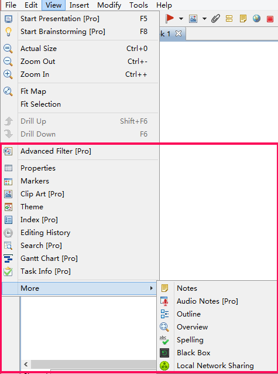

表示
Xmind は、マインド マップの編集、表示、管理のために、17 の異なるビューがあります。アウトライン、 プロパティ、スペル チェック、 音声ノート、Black Box、履歴の編集、詳細フィルター、注、概観、検索、 クリップアート、ローカルネットワーク共有、 マーカー、 テーマ、Web ブラウザー、タスク情報、ガントチャート。
ビューを開く
- メニューの表示を選択します。
- 表示したいビューを選択します。
- 必要なものが見つからない場合、「その他」にマウスを移動し、隠れているビューを表示してください。
- 表示したいビューを選択します。

注 : サイドバーをクリックして、ビューを開くこともできます。ビューの位置を移動
- ビューを選択します。
- 左クリックして、マウスを押したままビューを移動できます。XMind のウィンドウの外でもどこでも、ビューを配置することができます。